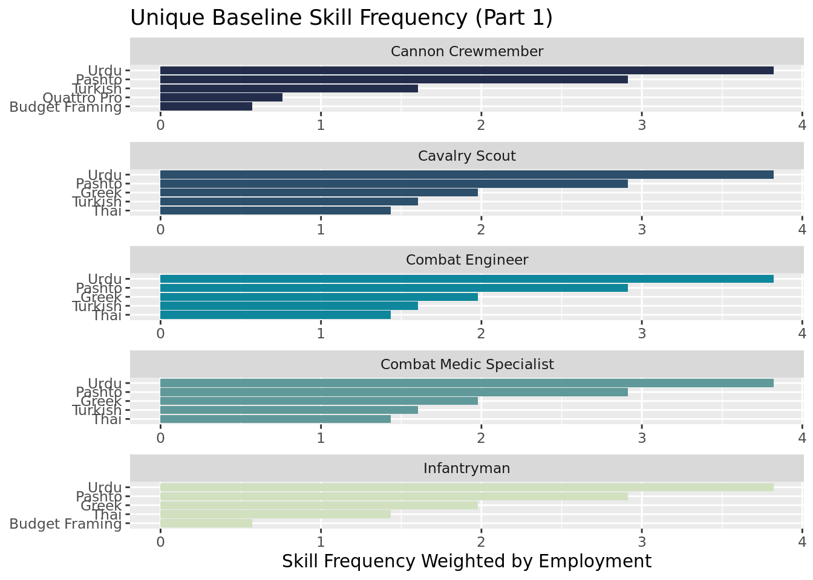

Baseline Skills
Summary Statistics
##
## <table style="text-align:center"><tr><td colspan="8" style="border-bottom: 1px solid black"></td></tr><tr><td style="text-align:left">Statistic</td><td>N</td><td>Mean</td><td>St. Dev.</td><td>Min</td><td>Pctl(25)</td><td>Pctl(75)</td><td>Max</td></tr>
## <tr><td colspan="8" style="border-bottom: 1px solid black"></td></tr><tr><td style="text-align:left">tot_emp</td><td>170</td><td>185,950.900</td><td>431,133.200</td><td>160</td><td>20,342.5</td><td>146,895</td><td>4,317,950</td></tr>
## <tr><td style="text-align:left">a_mean</td><td>170</td><td>51,009.410</td><td>15,686.110</td><td>25,510</td><td>39,335</td><td>59,167.5</td><td>120,140</td></tr>
## <tr><td colspan="8" style="border-bottom: 1px solid black"></td></tr></table>stacked bar chart (TBD)
Baseline Skill Frequency

Unique Skills (Baseline, Part 1)
Unique: skills that do not occur in all 11 MOS
Most commonly observed: knowledge of languages (Turkish, Urdu, Greek, Thai) 
Part 2